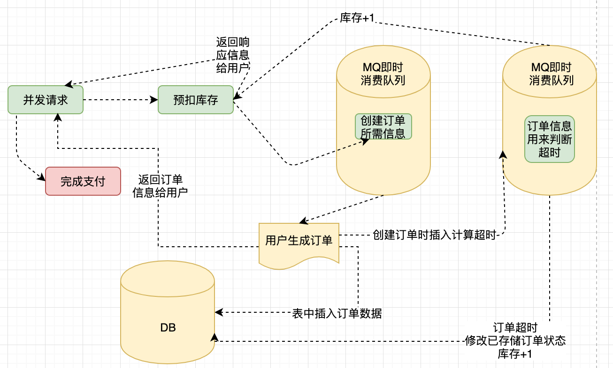

# node.js 中的消息队列
# 前言
本人平时学习及收集内容，欢迎参入一起讨论。
# 内容
- 什么是消息队列
- 为什么要使用消息队列
- 消息队列应用场景
- 主流消息中间件
- 安装 RabbitMQ
# 一、什么是消息队列
可以把它分成两个词消息和队列。当一大批客户端同时产生大量的网络请求（消息）时候，服务器承受能力肯定是有一个限制的。这时候要是有一个容器，先让这些消息排队就好了，通过有队列属性的容器排队(先进先出)，把消息再传到我们服务器，压力减小了好多，这个很棒的容器就是消息队列
这段理解中包含两个概念：客户端->生产者服务器->消费者当有消息队列出现，生产者和消费者是不可少的两个概念，上面的理解是多个生产者对象一个消费者，当然现实开发中还有许多消费者的情况。
# 二、为什么要使用消息队列
近两年谈的很多一个概念微服务，在一个大型业务系统架构中，会被拆分成很多小的业务系统，这些业务系统之间如何建立通信呢？大家熟悉的 HTTP、RPC 可以实现不同系统、不同语言之间的通信，除了这些往往还会使用消息队列（RabbitMQ、ActiveMQ、Kafafa 等）将这些系统链接起来，达到各系统间的解耦。
消息队列有如下优势：
- 应用解耦：消息队列可以使用消费者和生产者直接互不干涉，互不影响，只需要把消息发送到队列即可，而且可独立的扩展或修改两边的处理过程，只要能确保它们遵守同样的接口约定，可以生产者用 Node.js 实现，消费者用 python 实现。
- 灵活性和峰值处理能力：当客户端访问量突然剧增，对服务器的访问已经超过服务所能处理的最大峰值，甚至导致服务器超时负载崩溃，使用消息队列可以解决这个问题，可以通过
控制消息者的处理速度和生产者可进入消息队列的数量等来避免峰值问题 - 排序保证：消息队列可以控制数据处理的顺序，因为消息队列本身使用的是队列这个数据结构，
FIFO(先进先出)，在一些场景数据处理顺序很重要，比如商品下单顺序等。 - 异步通信：消息队列中的有些消息，并不需要立即处理，消息队列提供了异步处理机制，可以把消息放在队列中并不立即处理，需要的时候处理，或者异步慢慢处理，一些不重要的发送短信和邮箱功能可以使用。
- 可扩展性：消息队列可以做到
解耦，如果我们想增强消息入队和出队的处理频率，很简单，并不需要改变代码中任何内容，可以直接对消息队列修改一些配置即可，比如我们想限制每次发送给消费者的消息条数等。
# 三、消息队列应用场景
- 双十一商品秒杀/抢票功能实现
- 积分兑换(积分可用于多平台)
- 发送邮件，用户大数据分析等 同步变异步功能实现
- 基于 RabbitMQ 的 Node.js 与 Phython 或其他语言实现通信
# 3.1 双十一商品秒杀/抢票功能实现
我们在双 11 的时候，当我们凌晨大量的秒杀和抢购商品，然后去结算的时候，就会发现，界面会提醒我们，让我们稍等，以及一些友好的图片文字提醒。而不是像前几年的时代，动不动就页面卡死，报错等来呈现给用户。

# 3.2 积分兑换(积分可用于多平台)
积分问的模块，有一个公司多个部门都要用到这个模块，这时候就可以通过消息队列解耦这个特性来实现。各部门系统做各部门的事，但是他们都可以用这个积分系统进行商品的兑换等。其他模块与积分模块完全解耦。
# 3.3 发送邮件，用户大数据分析等 同步变异步功能实现
- 用户注册
- 用户注册选择几个兴趣标签，这时候需要根据用户的属性，用户分析，计算出推荐内容
- 注册后可能需要发送邮件给用户
- 发送给用户一个包含操作指南的系统通知
正常情况注册，不出现高并发
对于用户来说，他就是想注册一下这个软件，只需要服务端将他的账户信息存到数据库中他便可以登录上去做他想做的事情了。用户并不 care 这些事，服务端就可以把其他的操作放入对应的消息队列中然后马上返回用户结果，由消息队列异步的进行这些操作。
假如有大量的用户注册，发生了高并发
邮件接口承受不住，或是分析信息时的大量计算使 cpu 满载，这将会出现虽然用户数据记录很快的添加到数据库中了，但是却卡在发邮件或分析信息时的情况，导致请求的响应时间大幅增长，甚至出现超时，这就有点不划算了。面对这种情况一般也是将这些操作放入消息队列，消息队列慢慢的进行处理，同时可以很快的完成注册请求，不会影响用户使用其他功能。
# 3.4 基于 RabbitMQ 的 Node.js 与 python 或其他语言实现通信
这里也是利用了 RabbitMQ 的解耦特性，不仅仅可以与 Phython，还可以与其他很多语言通信。
# 四、主流消息中间件
- RabbitMQ
- RocketMQ
- ActiveMQ
- Kafka
# 4.1 RabbitMQ
一个由 erlang 语言开发基于 AMQP 协议的开源消息队列系统。能保证消息的可靠性、稳定性、安全性。
# 4.2 RocketMQ
阿里开源的消息中间件，是一款低延迟、高可靠、可伸缩、易于使用的消息中间件，思路起源于 kafka。最大的问题商业版收费，有功能不开放。
# 4.3 ActiveMQ
Apache 出品，早起很流行主要应用中小企业，面对大量并发场景会有阻塞、消息堆积问题。
# 4.4 Kafka
是由 Apache 软件基金会开发的一个开源流处理平台，由 Scala 和 Java 编写，是一种高吞吐量的分布式发布订阅消息系统，支持单机每秒百万并发。最开始目的主要用于套数据方向日志收集、传输。0.8 版本开始支持复制，不支持事物，因此对消息的重复、丢失、错误没有严格的要求。
说明：本文主要以 RabbitMQ 讲解，较为常见。
# 五、安装 RabbitMQ
# 参考资料
# 联系作者
平凡世界，贵在坚持。